1. Introduction
Welcome to the software development kit for Crashday. It will provide you with information about Crashdays folders, files and it's parameters as well as a complete set of tools.
With the information provided by this document you will be able to bring your own custom content, like track pieces or vehicles, into the game. In addition to solving technical issues the SDK will present rules and guidelines to create your custom content while meeting the official Crashday requirements.
2. Overview
2.1. Folders
This is a short overview on all the modding-relevant folders.

Crashday
directory tree
|
editor |
contains all the 3d model data, e.g.: track pieces, wheels, backgrounds etc. (see 6.5) |
|
sounds |
contains the single sound files sorted into subfolders by category |
|
textures |
global folder for texture data (see 6.1) |
|
tools |
not available by default but created with the SDK, contains all tools necessary for custom content (see 5.) |
|
trkdata |
contains subfolders for different purposes (cars, tiles, tracks, vegetation, wheels, etc.) |
|
trkdata\cars |
contains a list of cars with each one in an unique folder (see Technical realization of cars) |
|
trkdata\tiles |
contains definition files for track pieces (tiles) holding parameters like dimension, vegetation, AI info or reference 3d-model (see 4.) |
|
trkdata\vegetat |
contains definition files for different vegetation types holding parameters like dimensions or reference 3d-model |
|
trkdata\wheels |
contains definition files for all non-default wheels holding parameters like dimensions or reference 3d-model (see Custom wheels) |
2.2. File types
This is a short overview on all the modding-relevant file types used by Crashday.
-
.p3d
format for any 3d model appearing in the game
.tga
uncompressed Crashday texture format
.dds
compressed Crashday texture format
.tex
material shader defining the appearance of each related texture in the game
.wav
common wave file used for all sounds in the game (except music)
.txt
plain text file used for various purposes e.g. engine sounds description
.cca
car configuration file holding all the vehicles parameters (see Setup of car specification file )
.crv
engine torque curve file describing cars torque
.whl
wheel configuration file holding all the wheel parameters (see Custom wheels)
.lst
text files listing all the parts that can be bought in the career shop (see Shop and tuning parts)
.cfl
track piece file holding general parameters and referencing to the related 3d model (see Tile specification file)
.cai
text file holding the AI info for the related track piece (see AI driver information)
.cst
text file holding the stunt info for the related track piece (see Track piece stunt definitions)
2.3. Tools
This is a short overview on all the tools delivered by the SDK.
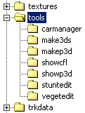
SDK
tools directory
-
MakeP3D
converts .3ds files into Crashdays .p3d format (see MakeP3D)
ZModeler p3d
Export
plugin for Zanoza ZModeler to export as p3d (see ZModeler export)
ShowP3D
p3d viewer that displays included meshes as well as stunt information and AI nodes (see 5.3)
ShowCFL
track piece viewer that displays track pieces in the same way they will appear in the game (see ShowCFL)
SuntEdit
editor to define stunt bonuses for particular actions on each track piece (see StuntEdit)
VegetEdit
editor to set the types and styles of vegetation used on each track piece (see VegetEdit)
Car Manager
helps installing/uninstalling custom cars for Crashday (see Car Manager)
3. Creating custom cars

3.1. Technical realization of cars
This paragraph explains how vehicles are handled in Crashday.
Every car has its own subfolder (located in [crashday]\trkdata\cars) by which it is automatically identified by the game. All files used by a car are placed in its related and unique car folder, except its own default wheels (if available). These are handled separately. (see Custom wheels)
To share your custom cars with others use the Car Manager tool to export this car folder into the .cpk format. (Crashday car package) To install custom cars, download the custom car's .cpk file and import it with the Car Manager. (see Car Manager)
If you installed/created the car files correctly, your custom car should be available in the game's career shop.
NOTE:
see 6.4 for the official Crashday car certifaicate guidelines.
3.2. List of tools involved in creating cars
This is a list of all tools required for creating own custom cars.
|
SDK tools |
MakeP3D or ZModeler p3d Export |
converter/exporter to create .p3d files of your 3d models |
|
|
ShowP3D (optional) |
view your car body with the game engine |
|
Car Manager (optional) |
share your custom cars with others |
|
|
Third party tools |
ZModeler, 3ds Max, Maya (or other 3d modelling tool) |
create the 3d model of your custom car |
|
|
Gimp, Paint.net, Photoshop (or other graphics application) |
create the car's textures |
|
text editor (notepad etc.) |
edit physical and game relevant parameters |
3.3. Overview of files that are part of a custom car
This is a short overview on the required and optional files for each car.

The
contents of a typical car folder (required files are highlighted)
|
carlogo.tga |
car's logo, will appear in game's garage |
|
carlogo.tex |
shader file for carlogo.tga |
|
rpmtext.tga |
obsolete, but still has to be present; copy+paste it from other cars |
|
shadow.tga |
GI-rendered shadow image |
|
shadow.tex |
shader file for shadow.tga |
|
carinfo.cca |
text file with physical and game relevant parameters (see Setup of car specification file) |
|
[carname].crv |
text file with engine's torque curve |
|
shop.lst |
text file listing all the parts that can be bought in the career shop (see Shop and tuning parts) |
|
[carname].p3d |
the 3d model of the vehicle (see Modeling guidelines) |
|
*.tga |
freely chosen texture names (see Texturing guidelines) |
|
*.tex |
shader files for free .tga's |
|
[carname]_def[size].whl |
wheel definition file for default wheel (see Custom wheels) |
3.4. Modelling guidelines (.P3D)
The car model P3D
The car's .p3d includes a number 3d meshes. Some of them are required by the game others are not. However there are also parts which may not be part of the car's .p3d. Driver, wheels, steering wheel and the rotating component of the mini gun are attached to the car body ingame.
A car usually consists of a kind of “base mesh“ which will always be visible ingame and other meshes which might be just partly visible. As certain meshes can be defined as tuning parts in Crashday, some car parts (e.g. a very special rear wing) will only be visible if you bought the related tuning part in the game. Thus, don't get confused that there will
sometimes be a number of similar meshes at the same position in car model files although only one or even none of them appears in Crashday at a time.
As described more in detail later, car tuning also allows to visually remove certain meshes ingame and replace them by new varied parts (or just add those new parts next to the existing ones).
HINT:
Meshes are usually identified by their names. Please take care that some .3ds-capable programs only support a limited number of characters in the mesh name. Do not use more than 10 characters in a name to be on the safe side!
NOTE:
In Crashday 1 unit means 1m.
List of meshes in the P3D
This is a list of the car's .p3d mesh names (whether required or not) and their meanings.
|
Mesh name |
Description |
|
main |
the basic main mesh (rigid car body including the interior) |
|
gls_* (e.g. “gls_front“) |
smashable window and glass meshes |
|
det_* (e.g. “det_mirl“) |
other detachable meshes (that usually includes: front bumper, rear bumper, outer-mirror meshes, license plate(s), wings, sideskirts etc.) |
|
any name (e.g.„engineblock“) |
other non-detachable meshes (e.g.parts that are only visible if you own a certain tuning part) |
|
headlights/taillights: headl_* (e.g. “headl_l“)
brakelights: brakel_* (e.g. “brakel_l“) |
head-, tail- and brakelight additiveoverlay meshes |
|
maincoll |
low-poly collision shape (Crashday will also run without it) |
|
mainshad |
low-poly ray casting shape (e.g. for mini gun hits, Crashday will also run without it) |
|
lod |
“level of detail” mesh representing a low-poly average of all tuning version for far distances (Crashday will also run without it) |
|
mg_body |
static mini gun body (Crashday will also run without it, but if not present mini gun will “fly”) |
HINT:
The main mesh builds the bounding box of the vehicle and thus represents the car's global extents. Every position set in the .cca (e.g. driver position) is relative to the main mesh's center. If the main mesh is missing the game will select another existing one as main mesh.
The “Pivot Point” of each additional mesh has to be equal to the main mesh's “Pivot Point”.
The “maincoll” collision shape mesh

The
collision shape “maincoll” (red)
To improve the vehicles handling it is recommended to raise the front vertices of the collision shape. (like the bow of a ship)
HINT:
Crashday even runs without a “maincoll” mesh. In that case the “main” mesh is used which usually
has very much more polygons slowing the game down a lot. To achieve optimal performance be sure to have a “maincoll” mesh.
The “mainshad” ray-casting mesh

The
ray-casting shape “mainshad” (green)
It is similar to the “maincoll” mesh except that it covers the whole car but with less detail. A vertex count of 20 to 30 seems appropriate.
This mesh is only used for ray tracing operations. Those operations are tests like „Are we hit by a missile?“ or „Should the headlight flare be visible from the current point of view?“
HINT:
Crashday even runs without a “mainshad” mesh. In that case the “main” mesh is used which usually
has very much more polygons. To achieve optimal performance be sure to have a “mainshad” mesh.
The “lod” “level of detail” mesh

The
“level of detail” mesh “lod”
The “lod” mesh has to be fully textured. The interior is completely removed and the windows are replaced with black reflective material. A polygon count of about 500 seems appropriate.
HINT:
Crashday even runs without an “lod” mesh. But to achieve optimal performance be sure to have an “lod” mesh available.
Headlights, taillights and brakelights

Overlay
meshes rendered additively “in front of” normal lights
To simulate actually glowing lights in-game Crashday uses an “additive overlay mesh“ that is displayed “on top” of the headlight or brakelight. You can best imagine overlay meshes as colored contact lenses placed on an eye. In our situation the eye is the light and the contact lense is the glowing overlay mesh.
Those meshes exist for every headlight and every brakelight. For most cars this will result in four headlights and two brakelights.
Adding flares:
Next to the overlay meshes you can also add a special lens flare glow effect to the headlights and brakelights. This is done by simply adding omni lights to your model. Put them slightly in front of the overlay meshes and assign light colors suitable for the type of light.
The inner and outer light radius parameter stored in .3ds files will be averaged in Crashday finally making up the size of the flare in the game. You can assign a maximum of four flare lights to each overlay mesh.
The omni light objects are identified and associated to the mesh by their name. In the following example we have 6 overlay light meshes with 8 related omni lights in total.
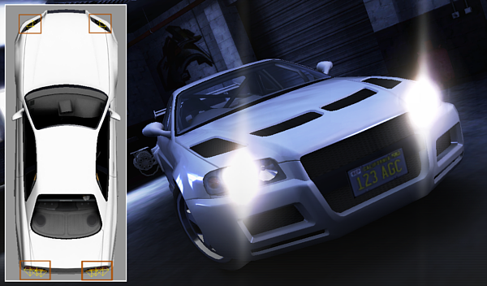
Every
omni light (highlighted in orange) will be visible as a lens flare
glow in Crashday
|
Light mesh name |
related name for omni light |
|
headl_l (headlight left) |
headl_l_1 |
|
headl_r (headlight right) |
headl_r_1 |
|
headl_rl (taillight left) |
headl_rl_1 headl_rl_2 |
|
headl_rr (taillight right) |
headl_rr_1 headl_rr_2 |
|
brakel_l (brakelight left) |
brakel_l_1 |
|
brakel_r (brakelight lright |
brakel_r_1 |
In this example, except the taillights, every light mesh has one associated omni light.
3.5. Texturing guidelines (.TGA)
Common Car Textures
In Crashday's rendering engine, every texture does exactly represent one material. That means, a texture will always be shaded and rendered in a certain way (and only in that way). If you, for example, had a glass texture on your car, it will automatically be reflective in-game, even if you don't set up any material parameters. In your modelling application, you don't have to care about materials at all. They are set up later by simply creating associated material files for your car's textures.
A vehicle in Crashday usually has the following textures applied:
-
body1.tga
car colored metallic body
body2.tga
only used if space in body1 is really not enough (e.g. tuning parts)
misc.tga
non-reflecting miscellaneous parts (usually interior and car bottom)
lights.tga
reflecting light parts and overlay glow texture
Related damage maps are modified versions of the original ones:
-
body1_2.tga
damage map counter part to body1.tga
body2_2.tga
damage map counter part to body2.tga
misc2.tga
damage map counter part to misc.tga
lights2.tga
damage map counter part to lights.tga
In addition to these car unique textures, Crashday features a list of so-called “shared textures” which are placed in Crashday's default texture folder. They can freely be used by any car. These textures shall help to reduce development time for cars by predefining commonly used materials instead of recreating them every time again for new cars. (see 6.2 for a complete list of shared car materials.)
Please refer to 6.1. Textures and shaders for detailed information on the texture size, texture format, folders and shader files.
The body texture
The base texture for a car is the „body” texture. It is used for any parts that are of car metal and whose color can be changed. While the „misc” and “lights” textures will mostly be made up of photos, the „body” texture's details are drawn into by hand (e.g. the door lines).
„Pre-shading“ the textures (“baking”):
All car textures in Crashday are pre-illuminated by texture “baked” Global Illumination. Cars with preshaded textures feel much more realistic, much heavier and more solid. Furthermore they seem much smoother (as if they are built with more polys) and the shading accentuates all contours in a car's shape. It is important to first find the right lighting setup so that baked shadows look the same for all cars. As you can see on the „body texture“ illustration on the upper right, the brightest body color for face normals heading up vertically is plain white (255, 255, 255). The body color for faces normals heading to the side is about (160, 160, 160). Those two parameters should be sufficient to „imitate“ the Global Illumination lighting setup from the reference texture.
Damage textures
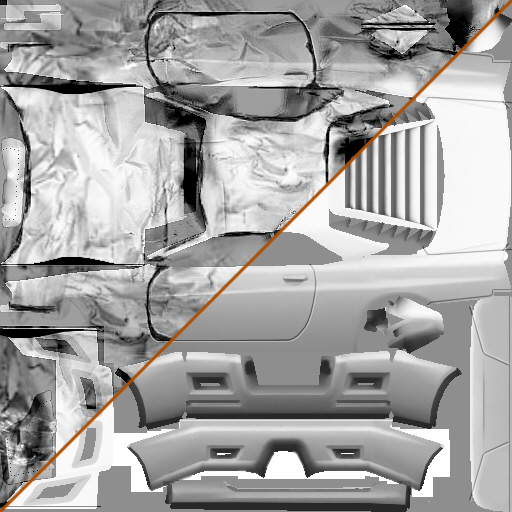 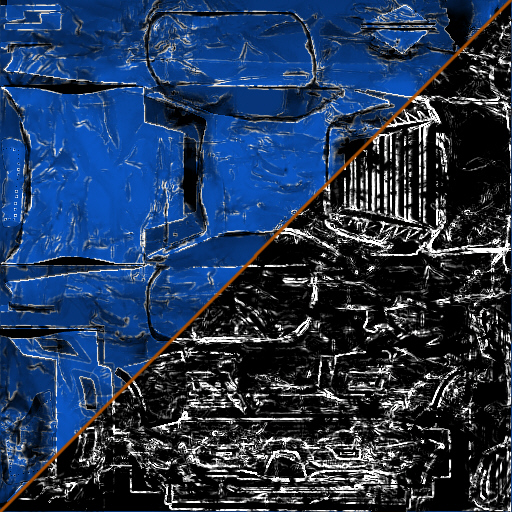
Damaged
and original body texture
Advanced
damage texture with scratches in alpha channel
The visual damage effects in Crashday are actually made up of two basic modifications on the model. Firstly, a model deformation done by bringing the vertices of a model in disorder, and secondly replacing the original car textures at the affected areas by so called damage textures.
Every texture used on a car (e.g. „body“, „misc“, “lights”) should have a damage map counterpart that is displayed on areas that have been hit in-game (usually with the suffix “2” like „body2“ or „misc2“). Damage maps are created in a graphics application after the „clean“ textures are final using them as your base pictures. The association of damage map textures to the „source textures“ is done by setting certain parameters in Crashday's .cca files (see Setup of car specificiation file).
For creating the dents we advise to collect several photos of (mostly white) damaged cars and make up a collection of greyscale „dent images“ which are layed over the base texture several times additively and subractively. That allows to brighten up and darken the texture.
Take care that the average brightness level of the damaged textures is nearly the same as the base texture because otherwise you will seeugly seams on partly damaged cars. Crashday does no alpha interpolation from source to damage texture.
HINT:
Less splitted UV-coordinates help to avoid seems when the damage texture replaces the original texture.
Advanced damage maps are using an alpha channel and are applied as decal on the base texture to realize bright scratches on the colored body. (see applying vinyls in this chapter)
Mapping glass parts:
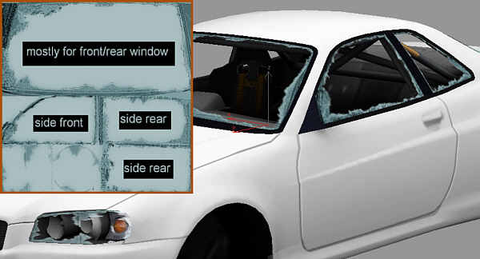
Correct
UV mapping for glass parts; glass2.dds (upper left)
texture for every car, except you like to create darkened glass or other modifications on the window.
Although the glass and most other shared textures are just a plain color you should take care of how you map the UV coordinates to the meshes, because the associated damage textures are not just a single color. For damaged parts the correct look on the windows parts is important.
NOTE:
(in general) Be sure to create a shader (.tex file) for each new texture. (see 6.1 for a description)
Keep the number of different textures as low as possible to reduce the batch count and thus get optimal performance.
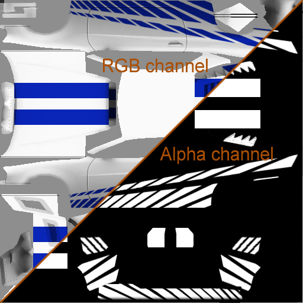
Blue
stripes vinyl with alpha channel
If a texture can be color changed in-game (mostly body1.tga and body2.tga) it can have vinyls applied to it. (see Setup of car specificiation file for vinyl-texture association)
When a vinyl is applied to a default texture by a tuning kit, only the areas masked out by the alpha channel (white pixels) are replaced with the vinyl color. The rest stays original and is still capable of color changing.
Using vinyls for advanced damage maps:
In Crashday every vehicle (that can be color changed) has a decal by default that changes nothing on its appearance but gives the option of simulating blank metal where the color is scraped out.
The “clean” body texture is replaced by itself. But be sure to mask out a non visible area on the texture. The body's damage map is replaced by itself too. But this time the alpha channel is responsible for the scratches on the surface. (see damage textures) As just mentioned, bright pixels on decals won't change their color any more. So this will look like blank metal in-game. To improve this effect you can change the “decalcolor” to “B4B4B4”. (a bright grey)
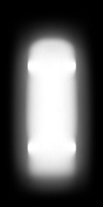
Shadow.tga
alpha channel
Crashday displays a static shadow directly below the vehicle. This shadow is just a texture that is stored in the car's folder and associated to the car by the .cca descriptor file. To achieve best results this shadow has to be created by using Global Illumination rendering again as done for the texture preshading already.
Look at the right shot what this „GI shadow“ should look like. As you will build cars without wheels you should at least create some cylinder or something similar as a wheel replacement to have (the quite important) wheel shadows in the texture as well.
An appropriate texture format for most ground shadow textures is 128x256 with the car's front heading towards to upper picture border. The texture itself is simple black, but the shadow data is stored into the alpha channel.
3.6. Setup of Crashday car specification file (.CCA)
This file is the most essential car description file. It contains all of the gameplay related information as well as the physical parameters.
NOTE:
Each car needs a correct carinfo.cca to run! If the game crashes this is most likely a cca-related problem. Do not change its structure, e.g. add lines - the Crashday parser is very strict!
Comments are made with the “#”-character.
All positions are relative to the “main” mesh's center (in meters)
Following an example version of a "carinfo.cca" with explanations.
|
Example file: carinfo.cca |
Explanation |
|
# "Apachee" description file |
custom info line |
|
apachee.p3d |
obsolete |
|
apachee.p3d # 3d model (high) |
.p3d model file of car |
|
CARMETAL # car material |
material type of object, has to be be "CARMETAL" |
|
1870 # mass in kg |
total mass in KG |
|
0 # -obsolete- |
obsolete |
|
0 -0.2 -0.23 # center of gravity |
center of gravity |
|
|
blank line |
|
--- General --- |
START OF GENERAL PARAMETER SECTION |
|
|
blank line |
|
APACHEE 220X # displayed name |
car name displayed in garage |
|
APACHEE |
car name short version (max 8 characters) |
|
main maincoll mainshad det_l_mirr det_r_mirr gls_front gls_rear gls_right gls_left gls_light0 gls_light_ det_numpl headl_l headl_r headl_lr headl_rr brakel_l brakel_r det_wiper mg_body mg_body.2 |
this
list of space-separated mesh names defines all meshes of a car
that will always be attached to a car, whatever tuning
configuration is set up for it. |
|
A # car "quality class" |
defines the default classification of a car. Possible values are "E" (worst), "D", "C", "B" and "A" (best). This classification can also be upgraded with tuning parts (see tuning section below) |
|
default # author of car |
author that created the car |
|
driver1.p3d # default driver |
.p3d file for default driver 3d model |
|
sports_spoke18.whl # default wheel |
defines the default wheel attached to the car. Wheels are identified by a ".whl" file which is either located in the car folder itself or in the global wheel directory "trkdata/wheels/". This wheel file defines both the wheel's and rim's look as well as the physical driving properties. |
|
0.635 # min wheel size |
defines the minimum rim diameter (in meters) allowed for wheels |
|
0.76 # max wheel size |
defines the maximum rim diameter (in meters) allowed for wheels |
|
enginesounds/apachee/apachee |
defines the engine sound set. Each engine sound available has a ".txt" file. The sound set must be specified without the file name extension ".txt". |
|
1 # can change the car's color? |
is possible to change the car's paint color ("1") or not ("0")? |
|
2 # number of textures to paint for color change |
if a car's paint color can be changed, this value must specify a number of textures to be colored (at least one). If the paint's color can not be changed, this value is "0". |
|
body.tga body2.tga # list of textures for repaint |
if a car's paint color can be changed, this line lists all textures to be colored, separated with spaces. If the paint's color can not be changed, this value is "NONE"! |
|
4 # number of car damage textures |
defines
the number of damage textures (0 or more) |
|
body.tga -> body2.tga |
damage texture 1 (syntax: "[original texture] -> [damage texture]") |
|
glass.tga -> glass2.tga |
damage texture 2 |
|
misc.tga -> misc2.tga |
damage texture 3 |
|
lights.tga -> lights2.tga |
damage texture 4 |
|
15 # number of missiles |
defines the default number of missiles on this car |
|
10 # number of mines |
obsolete |
|
wide # type of numplate |
type of license plate on the car. Possible values are "wide" (wide EU style), "narrow" (narrow style) or "us" (American style). If the car model contains a license plate mesh that uses the global texture "l_def.tga" (wide), "s_def.tga " (narrow) or "u_def.tga " (US), the player can switch between different license plates in the garage screen (currently not possible) |
|
shadow.tga # shadow texture |
texture of the car shadow (required) |
|
0.97 # shadow dimension width |
scaling of shadow plate in width axis |
|
0.97 # shadow dimension depth |
scaling of shadow plate in depth axis |
|
0 # shadow shift in width direction |
shifting of shadow plate in width axis (in meters) |
|
0 # shadow shift in depth direction |
shifting of shadow plate in depth axis (in meters) |
|
|
blank line |
|
--- Engine --- |
START OF ENGINE PARAMETER SECTION |
|
|
blank line |
|
4wd # drive ("front", "rear", "4wd") |
defines the type of drive. Possible values are "4wd", "front" or "rear" |
|
611 # horsepowers |
horse powers of the car. Only used as a statistical value |
|
6 # gears (w/o rear+neutral) |
number of gears, not counting neutral and reverse |
|
94 # top speed (in m/s) |
top speed of car in m/s. To convert a km/h value to m/s divide by 3.6 |
|
580 # Max. Engine torque in Nm |
maximum engine torque in Nm. For a specific RPM, the maximum torque is multiplied with the value of the normalised torque curve at that specific RPM point to retrieve the actual amount of torque |
|
-80 # Max. braking torque in Nm |
maximum braking torque in Nm. |
|
apachee.crv # File of torque curve |
torque curve file containing the normalised torque curve of the engine. Alternatively, you can use "default" to use a common default torque curve |
|
9000 # Max RPM |
maximum engine RPM |
|
1700 # Idle RPM (startup rpm) |
idle RPM |
|
4500 # Shift-down-RPM |
lowest RPM point to shift down in automatic shifting |
|
8000 # Shift-up-RPM |
highest RPM point to shift up in automatic shifting |
|
-3.58 3.7 2.5 1.8 1.4 1.15 0.95 # Gear ratios |
gear ratios, starting with reverse gear followed by other non-neutral gears |
|
3.18 # Differential ratio |
differential ratio |
|
|
blank line |
|
--- Physics --- |
START OF PHYSICS AND DRIVING PARAMETER SECTION |
|
|
blank line |
|
0.012 # energy loss |
amount of damage inflicted to own car in crashes |
|
4 # crash-damage multiplier |
amount of damage inflicted to other cars in crashes (mass dependent) |
|
0.6 # deform factor |
car body deformation amount |
|
34 # Wheel turn velocity (angle/s) |
steering velocity (in angle units/s) |
|
20 # Max wheel turn angle at v=0 |
maximum possible wheel turn angle when car isn't moving (full circle is 256 degrees) |
|
20 # Min wheel turn angle |
maximum possible wheel turn angle when has reached a certain speed (full circle is 256 degrees) |
|
40 # min turn angle speed |
velocity at which max turn angle is not higher than defined above |
|
140 # spring stiffness |
suspension spring stiffness. Too high values can blow up the integrator! |
|
8 # spring damping |
shock absorber for springs. Usually about percent of the spring stiffness. Too high values can blow up the integrator! |
|
0.1 # suspension spring length |
maximum length of suspension springs in meters |
|
0.1 # vert. anti-roll aid |
anti-roll aid to avoid flipping over of cars during cornering. This value defines how much to lift up the point where contact patch wheel forces act on the car (in meters) |
|
0.4 # strength of handbrake |
strength of the handbrake "turn effect" in the range from 0 to 1 |
|
|
blank line |
|
--- Positions --- |
START OF POSITIONS SECTION |
|
|
blank line |
|
-0.92 -0.28 1.36 # left, upper wheel |
position of the left front wheel (suspension fully compressed) NOTE: Y-values of front and rear wheels should not differ more than 5cm from each other to avoid handling issues! |
|
1.03 -0.28 -1.4 # right, lower wheel |
position of the right rear wheel (suspension fully compressed) |
|
-1.18 0.15 0.4 # pos of minigun |
position of the minigun barrels |
|
0 # angle of minigun |
pitch angle of the minigun barrels (full circle is 256 degrees). A negative values means pointing down. |
|
0 -0.2 -2 # mine spawn point |
obsolete |
|
-0.4 -0.0 0 #missile starting point |
missile spawning position |
|
-0.38 -0.05 0.15 # driver position |
driver mesh position |
|
-0.29 -0.2 -2.17 # exhaust position 1 |
position of the (first) exhaust. This position is used to apply exhaust flames. NOTE: different tuning bumpers can also have different exhaust positions. In this case you need to adjust the exhaust positions with special parameters in the tuning section. |
|
-0.29 -0.2 -2.17 # exhaust position 2 (if only one exhaust ex1=ex2) |
position of the second exhaust. This position is used to apply exhaust flames. If no second exhaust is available just keep the position equal to the first exhaust. NOTE: different tuning bumpers can also have different exhaust positions. In this case you need to adjust the exhaust positions with special parameters in the tuning section. |
|
0.5 0.2 1 # CTF flag |
position of the HTF smiley |
|
0.0 0.4 0 # PTB bomb |
position of the attached bomb model |
|
-0.3 0.42 0.2 # cockpit cam |
position of cockpit cam |
|
0 0.35 1.1 # hood cam |
position of hood cam |
|
0 0.0 2.1 # bumper cam |
position of bumper cam |
|
0 0.6 -0.6 # car-attached rear view |
position of car-attached rear view cam |
|
-1.3 0.2 0.1 # cam on left car side |
position of cam attached to left car side |
|
-0.9 0.6 1.4 # cam on right car side |
position of cam attached to right car side |
|
0 0.42 0 # Driver cam 1 |
position of driver camera 1 (looking with the driver) |
|
-0.4 0.42 0.5 # Driver cam 2 |
position of driver camera 2 (looking towards the driver) |
|
-1.5 0.42 0.1 # Driver cam 3 |
position of driver camera 3 (looking sidewards to the driver) |
|
-0.33 0.1 0.55 # steering wheel |
position of steering wheel |
|
0 0 0 # car cover plane |
position of fabric car cover plane visible in career shop |
|
|
blank line |
|
--- Tuning --- |
START OF TUNING SECTION |
|
|
blank line |
|
1 |
number of car tuning parts. (See below for details of the tuning section) |
|
|
blank line |
|
// Turbokit |
one line per tuning part: variable comment |
|
name=eng_turbo p3dmesh1=turbo_inta turbonoise=100 backfires=1 add_horsepower=110 add_torquenm=150 |
one line per tuning part: tuning part identifier and properties. The line can contain a variable number of arguments separated by spaces. |
|
|
blank line |
|
--- colors --- |
START OF COLORS SECTION |
|
|
blank line |
|
21 140 255 # Default color |
active car color right after purchasing the car |
|
6 # Available colors |
number of preset car colors in garage screen, at least one is required. If you defined a car that does not support changing the paint's color, this line must be "1". |
|
0 22 85 # nice dark blue |
list of pre-set colors, one line for each color |
|
21 140 255 # bright tuning-like blue |
|
|
193 213 228 # silver |
|
|
212 255 191 # bright pastell green |
|
|
221 255 63 # poison-green |
|
|
255 226 42 # lambo-style yellow |
|
|
|
blank line |
|
--- AI --- |
START OF AI TUNING SECTION |
|
|
blank line |
|
1 # predefined AI tuning setups |
number of available AI car setups (divided into race and offroad setups) |
|
name=race-0 class=A setup=eng_turbo|fw_default wheel=supersport_s1_17.whl |
name of setup, either race- or offroad- and increasing number quality class (A=best, E=worst ) used tuning parts corresponding to names defined in tuning section used wheels (syntax like default wheel in line 17) |
|
|
end of file |
In this example the “visibilities” section (which is interesting for performance tweaking) is missing. As it is optional for every vehicle, it shouldn't be described any further in this document.
Tuning
section:
Each car can have a variable number of tuning parts. A
tuning part can either change visual, physical or both aspects of a
car. The total number of tuning parts per car must be specified and
each tuning part must be given a unique identifier string.
NOTE:
Each tuning part in the carinfo.cca must have a corresponding shop
part in the car's shop.lst (see Shop and tuning parts) with the same identifier name!
Otherwise car tuning parts won't have any effect. (example: you
define one tuning part for your car, which is a tuning front bumper
part named "fbmp1". The corresponding shop part list must
also then define a shop part for this bumper part and also name it
"fbmp1")
This list defines all possible
parameters that can be part of a tuning. Each of these elements can
be combined.
|
add_carclass= |
upgrades the car's car classification. This can "0.5", "1", "1.5", "2". An upgrade of "1" is equal to increase the classification by one classification letter, like from a "B" to an "A" car. |
|
PHYSICAL TUNING |
|
|
add_massadd= |
changes car mass. +/- value in kg is added to current mass |
|
add_horsepower= |
changes horse power (only statistical value). +/- value is added to the current horse power |
|
add_topspeed= |
changes top speed. +/- value in m/s is added to the current top speed |
|
add_torquenm= |
changes acceleration torque. +/- value in Nm is added to the current torque value |
|
brake= |
changes brake strength. Value is multiplied with current brake value |
|
diffratio= |
changes the differential ratio. Value is multiplied with the current ratio |
|
energyloss= |
changes damage inflicted to own car. Value is multiplied with current energy loss value |
|
crashpower= |
changes damage inflicted to other cars. Value is multiplied with current crash power |
|
deform= |
changes car deformation strength. Value is multiplied with the current deformation value |
|
springstiffness= |
changes suspension spring stiffness. Value is multiplied with the current stiffness value |
|
springrange= |
changes suspension spring length. Value is multiplied with the current length value |
|
springdamping= |
changes suspension spring damping. Value is multiplied with the current damping value |
|
add_antirollheight= |
changes anti-roll aid. +/- value in meters is added to current anti-roll aid height |
|
add_trackfront= |
changes the front wheel track. +/- value in meters is used to move each front wheel away from the center |
|
add_trackrear= |
changes the rear wheel track. +/- value in meters is used to move each rear wheel away from the center |
|
add_wheelposyfront= |
changes the vertical position of the front wheels (with fully compressed suspension). +/- value in meters is added to the current vertical position |
|
add_wheelposyrear= |
changes the vertical position of the rear wheels (with fully compressed suspension). +/- value in meters is added to the current vertical position |
|
DECALS/VINYLS & EFFECT PAINT |
|
|
decaltype= |
value has to be “decal” (a maximum of 4 decals is possible) |
|
decal1= |
decal texture file 1 |
|
decal2= |
decal texture file 2 |
|
decal3= |
decal texture file 3 |
|
decal4= |
decal texture file 4 |
|
decalcolor= |
RGB hex color value to be multiplied with the decal textures (without '#' or '0x') |
|
tex1toapplydecal1= |
name of first car texture where to apply the decal texture 1 |
|
tex2toapplydecal2= |
name of second car texture where to apply the decal texture 2 |
|
tex3toapplydecal3= |
name of third car texture where to apply the decal texture 3 |
|
tex4toapplydecal4= |
name of fourth car texture where to apply the decal texture 4 |
|
OTHER |
|
|
engsound= |
changes the selected engine sound set (see above for explanations) |
|
turbonoise= |
changes the volume of the turbo blow off valve sound in the range from 0-1. The default volume is defined per engine in its engine sound set file |
|
gearboxnoise= |
changes the volume of the rally-style gear box noise in the range from 0-1. The default volume is defined per engine in its engine sound set file |
|
backfires= |
changes the intensity and amount of exhaust backfires in the range from 0-1. The default value is defined per engine in its engine sound set file |
|
ignitionsound= |
changes the ignition sound of the engine. The default sound is defined per engine in its engine sound set file |
|
add_missilecapacity= |
add a certain number of missiles to the car |
|
shift_exhaust1x= |
shifting of first exhaust in x position |
|
shift_exhaust1y= |
shifting of first exhaust in y position |
|
shift_exhaust1z= |
shifting of first exhaust in z position |
|
shift_exhaust2x= |
shifting of second exhaust in x position |
|
shift_exhaust2y= |
shifting of second exhaust in y position |
|
shift_exhaust2z= |
shifting of second exhaust in z position |
|
ATTACH/DETACH MESHES WITH A TUNING |
|
|
p3dmesh1= |
these commands allow to attach up to 16 meshes to the car. Meshes, that are not part of a tuning, must be defined in the "default mesh list" (see top of carinfo.cca) |
|
removemesh1= |
these commands allow to remove up to 16 meshes from the car. To remove a mesh, it must have been added to the "default mesh list" before (see top of carinfo.cca) (a typical use for the remove-function would for example be to remove a license plate on a tuned car rear) |
3.7. Creation and setup of custom wheels (.P3D, .WHL)
When creating cars for Crashday it is not necessary to make them their own default wheels. However you might want to give your vehicle some unique rims. The following paragraph should provide you with the knowledge for creating your car's own wheels.
Usually custom wheels should deliver the following files:
-
[wheelName]_def[size].whl
physical property information, the filename also defines the rim diameter in inch (e.g. apachee_def17 for 17” rims), this file has to be located in car's folder
[wheelName].p3d
the 3d model of the complete wheel (normalized extends)
[rim].tga
texture file for rim mesh
[rim].tex
shader file for rim texture
[rimAnimated].tga
motion blured rim texture file for rotating rim mesh
[rimAnimated].tex
shader file for motion blured rim texture
The .whl file holds the following parameters (example from Apachee default wheels):
-
whl-apa-def.p3d
link to the 3d model located in [crashday]\editor
0.78
rim radius percentage (0-1) of full wheel radius
245
wheel width in mm for front wheels
330
wheel width in mm for rear wheels
0.06
slip ratio traction peak (0.0-1.0) – how much does the tire need to slip to generate 100% of traction
0.7
remaining traction at maximum slip (0.0-1.0) – if slipping too much, how much % of traction is left?
9
slip angle at lateral force peak (0-90 deg) – at which angle of wheel inclination does the tire generate 100% of the lateral forces
0.95
remaining traction at maximum slip angle (90 deg) – if wheel is slipping 90 degrees towards the movement direction, how much sidewards traction is left?
0.86
rubber traction constant - general multiplier (multiplied with wheel width)
0.45
grass traction multiplicator (multiplied with wheel width)
1
whether or not assign chrome instead of specular in garage/shop
The wheel 3d model has normalized extends i.e. it is scaled in-game by the .whl file. It should feature the following meshes:
-
main
rim and tire geometry (polygon count of Crashday default wheels is about 1300)
ainim
mesh which is displayed at a certain rotation speed
static_bra
non-rotating brake mesh
NOTE:
To achieve optimal performance be sure your custom wheels feature “level of detail” steps. see 6.3 for a reference on the “level of derail” implementation in Crashday.

main
and static_bra mesh
anim
mesh
rim
texture (256x256)
animated
rim texture with alpha channel
NOTE:
The model or textures of wheels are not allowed to be stored in the car folder! They have to be in /editor/ or /textures/ respectively. This has to be taken care of when designing and publishing custom cars.
3.8. Setup of shop and tuning parts (.LST)
The car's shop.lst is necessary to the vehicle, tuning parts and default wheels available in the career shop and thus has to be provided. It defines names, prices and availability conditions of articles.
Structure of the shop.lst file:
The
file contains a variable number of shop parts. The number of total
items in the file must not be specified, items are simply placed
below each other and the item count is calculated
automatically.
Between items, a free line is maintained followed
by the line "Next:".
|
Example file: shop.lst (corresponding to carinfo.cca example) |
Explanation |
|
Crashday-ShopDataList |
first static line |
|
|
blank line |
|
Next: |
START OF SHOP PART ITEM "Next:" indicates next shop part item |
|
*currentcar* |
identifier name (“*currentcar*” as this shoppart is the car itself) |
|
car |
group that item belongs to, available are: car, fbumper, rbumper, sidekit, hood, rwing, wheels, performance, weapon, skin, cassis, armour, crashpower |
|
NONE |
parent object of a shop part. This requires the name of the car folder, if you define car-related shop parts like tunings. Otherwise use "NONE" |
|
Apachee |
part name displayed in the shop |
|
[contents of line meaningless] |
obsolete |
|
withrespect 1370 |
availability condition, either “withrespect [number]” or “aftercarbought” |
|
0 |
obsolete |
|
NONE |
obsolete |
|
152000 |
price of the item, should be “0” for stock car parts |
|
NONE |
obsolete |
|
0 |
set this to "1" if your shop part is a stock tuning part of a car |
|
|
blank line |
|
Next: |
START OF SHOP PART ITEM |
|
eng_turbo |
identifier name (related to the only tuning former defined in the carinfo.cca) |
|
performance |
group that item belongs to, available are: car, fbumper, rbumper, sidekit, hood, rwing, wheels, performance, weapon, skin, cassis, armour, crashpower |
|
*currentcar* |
parent object of a shop part. This requires the name of the car folder, if you define car-related shop parts like tunings. Otherwise use "NONE" |
|
Light Kerformance Kit |
part name displayed in the shop |
|
[contents of line meaningless] |
obsolete |
|
aftercarbought |
availability condition, either “withrespect [number]” or “aftercarbought” |
|
0 |
obsolete |
|
NONE |
obsolete |
|
8000 |
price of the item, should be “0” for stock car parts |
|
NONE |
obsolete |
|
0 |
set this to "1" if your shop part is a stock tuning part of a car |
|
|
blank line |
|
Next: |
START OF SHOP PART ITEM |
|
apachee_def17.whl |
identifier name (related to the only tuning former defined in the carinfo.cca) |
|
wheels |
group that item belongs to, available are: car, fbumper, rbumper, sidekit, hood, rwing, wheels, performance, weapon, skin, cassis, armour, crashpower |
|
*currentcar* |
parent object of a shop part. This requires the name of the car folder, if you define car-related shop parts like tunings. Otherwise use "NONE" |
|
Apachee Default Wheels |
part name displayed in the shop |
|
[contents of line meaningless] |
obsolete |
|
aftercarbought |
availability condition, either “withrespect [number]” or “aftercarbought” |
|
0 |
obsolete |
|
NONE |
obsolete |
|
0 |
price of the item, should be “0” for stock car parts |
|
NONE |
obsolete |
|
0 |
set this to "1" if your shop part is a stock tuning part of a car |
NOTE:
Tuning parts listed in the shop.lst are linked to their physical representation in the carinfo.cca only by their name. So be sure that the part identifier in the carinfo.cca matches its pendant in the shop.lst.
HINT:
A stock car part is a shop item that is automatically purchased as the player purchases a car. Stock shop parts don't show up in the shop separately, i.e. the player doesn't even notice that they exist. It usually defines a stock element of a car, such as a default wheel or a default bumper that (physically) would have to be removed from the car to attach a tuned version. Most cars usually have at least one stock front bumper, one stock rear bumper and a default stock wheel. Stock parts guarantee that you can always switch a tuning category back to the state it was in when you bought the car.
 4.
Creating custom track pieces
4.
Creating custom track pieces
4.1. Technical realization of track pieces
This paragraph explains how track pieces are handled in Crashday.
Track pieces are known to the game by the name of their .cfl file located in [crashday]\trkdata\tiles. (for a complete list of files used for each track piece see Overview of track piece files) Custom tiles will be automatically inserted into a custom tiles section in the track editor.
The following paragraphs will explain what has to be taken care of when modelling and integrating new tiles into Crashday.
4.2. List of tools involved in creating track pieces
This is a list of all tools required for creating own custom cars.
|
SDK tools |
MakeP3D or ZModeler p3d Export |
converter/exporter to create .p3d files of your 3d models |
|
|
ShowP3D (optional) |
view your tiles 3d model with the in-game engine |
|
ShowCFL |
view the complete tile (including vegetation, AI nodes, LOD, etc.) with the in-game engine |
|
|
StuntEdit |
create stunt definition zones for each track piece |
|
|
VegetEdit |
add vegetation to each track piece |
|
|
Third party tools |
ZModeler, 3ds Max, Maya (or other 3d modelling tool) |
create the 3d model of your custom track piece |
|
|
Gimp, Paint.net, Photoshop (or other graphics application) |
create the textures for your track piece |
|
text editor (notepad etc.) |
edit the .cfl and/or .cai files of your track piece |
4.3. Overview of files that are part of a custom track piece
This is a short overview on the related files for custom track pieces.

Tile
related files are spread over different folders
|
trkdata\tiles |
|
|
[tilename].cfl |
track piece file holding general parameters and referencing to the related 3d model (see Tile specification file) |
|
[tilename].cai |
text file holding the AI info for the related track piece (see AI driver information) |
|
[tilename].cst |
text file holding the stunt info for the related track piece (see AI driver information) |
|
[tilename].tga |
auto-generated image of track piece for use in track editor (see Track editor integration) |
|
textures |
|
|
Crashday shared textures |
Crashday offers a wide range of shared textures, feel free to use them for your custom track pieces |
|
Your custom textures |
add your own textures for custom track pieces here |
|
editor |
|
|
[tilename].p3d |
the 3d model of your track piece (see Modeling and texturing guidelines) |
4.4. Modelling and texturing guidelines (.P3D)
The track piece P3D
There are four possible sizes for track pieces. A width and height of either 20x20m, 40x40m, 20x40m or 40x20m is supported. The “main” mesh, beeing responsible for the tile's bounding box and collision detection, should meet exactly on of these four extents!
Track tiles are also supporting multiple meshes (not recommended), “level of detail” steps (see 6.3) and destroyable meshes.
Below you see a list of different types of breakable meshes:
-
Mesh name
Description
gls_* (e.g. “gls_wind“)
smashable window and glass meshes
plas_* (e.g. “plas_frame“)
smashable plastic object in track piece
wood_* (e.g. “wood_fence“)
smashable wood object in track piece
metl_* (e.g. “metl_fence“)
smashable metal object in track piece
expl_* (e.g. “expl_barrl“)
explosive object in track piece
NOTE:
if “expl_” meshes are hit, they'll explode and will be replced with an “dest_[sameName]” mesh (if available)
e.g. “expl_barrl” will be replaced with “dest_barrl”

Matching
and mismatching tiles
Modelling
In Crashday tiles will only be seamless if their borders are exactly matching each other. That means for example you can build in the track editor a planar field tile next to another planar tile. But you cannot combine a road with a planar field. (ugly holes will appear in the floor) The only solution is a converter tile. (e.g. from road to field) Be sure to respect this circumstance when building custom tiles.
While modelling you should think about whether your track piece can be bent in the x- and/or y-axis or not. If you decide to support bending on a particular axis, the track piece has to be subdivided every five meters parallel to this axis. This is necessary for the in-game terrain modification by heightmaps.
A typical example of no bend restrictions are planar field tiles. So they has to be subdivided in x- and y-axis. If you are creating a road tile, it isn't wanted to be bent athwart the driving direction. And finally house tiles for example should never be bent in any direction. These three cases are illustrated below. (see Tile specification file for setting up bending restrictions, see 7. for example .max/.3ds files)

Plane
field tile, subdivided in x/y-axis
Road
tile, subdivided in y-axis
House
tile, no subdivision
NOTE:
The lowest vertex (in y-axis) will define the default bottom height. However it is possible to model tiles below the 0-height (y-value of vertices < 0). see MakeP3D on how to set up parameters for makeP3D.
In Crashday 1 unit means 1m.
Smoothing groups
Different from car-.p3d's, smoothing groups are not completely supported by track pieces. In fact you only can set one, and only one, smoothing group (SG). All faces holding this SG will be smoothed together, the remaining polys will appear flat shaded in-game.
Below is a checklist what has to be taken care of, when creating track pieces:
-
Be sure track pieces “main” mesh meets one of the four dimensions (XxY: 20x20m, 40x40m, 20x40m, 40x20m)
As the “main” mesh is also responsible for collision detection, make sure it has sufficient but not too much detail
Make sure to have “level of detail” meshes (see 6.3 for an explanation of “lod” gradation)
AI usually needs AI-nodes in the midst of tiles, respect that when creating road tiles (see AI driver information for AI-node setup)
Make sure that no holes will emerge on tile borders when combining track pieces
Subdivide your track tiles every 5m on x/y-axis where possible
When modelling below 0-height use special parameter provided by makeP3D (see MakeP3D)
Make sure polygons are only using one single or no smoothing group
Texturing
You can either use Crashday's default textures and/or add your own .dds/.tga-files. The complete list of textures, used by track tiles, has to be placed into [crashday]\textures. Please refer to 6.1. Textures and shaders for more information on how to use textures and shaders in-game.
4.5. Setup of Crashday tile specification file (.CFL)
Besides the .p3d of a track tile, the .cfl-file is one of its most important parts. Every track tile is visible and thus identified only by its .cfl-file. Located in [crashday]\trkdata\tiles it holds the link to the 3d model and various general parameters. The game does not require the .cfl-file having the same filename as the .p3d-file. However, in order to create clean and structured custom content, it is recommended to do so.
Below is an overview of the .cfl parameters:
|
Example file: streetb1.cfl (straight country road) |
Explanation |
|
Crashday-FieldObject-File |
first static line |
|
- # tile name |
track piece name, this line is only used for custom track pieces that do not have an own category in track editor |
|
streetb1.p3d # Modelfile |
the link to the related .p3d 3d model file located in [crashday]\editor |
|
1 1 # tile dimensions X x Y |
normalized extends of the track piece, so the game knows which dimensions it has to expect (1 1 -> 20x20m; 2 2 -> 40x40m; 1 2 -> 20x40m; 2 1 -> 40x20m) |
|
GROUND_FLAT |
obsolete |
|
1 # Autolist in track editor |
set this value to “1” if you want it to be displayed in track editor, otherwise set it to “0” HINT: Setting this to “0” can be useful if you have a track only consisting of custom pieces, but you do not want the user to set your track pieces separately (like the minigame skijump tiles) |
|
mountcr.cfl |
obsolete |
|
1.0 |
obsolete |
|
1 # possible to recover? |
this value is “1” if it is possible to recover on this track piece, otherwise “0” |
|
0 # Is tile a checkpoint? |
defines if this tile is a checkpoint or not (checkpoint “1”, no checkpoint “0”) NOTE: Every tile can be checkpoint as long as it has tile dimensions of “1 1” (20x20m), for checkpoints the next line defines the extends of the checkpoint box, if this tile is no checkpoint next line will be omitted |
|
-7 7 7 -3 # checkpoint extends |
(only present if checkpoint=1) upper left and lower right corner of checkpoint box relative to the “main” mesh's center in meters |
|
0 # freely roam around? |
is it possible to freely roam across the whole tile without hitting anything?(e.g. for completely plane fields) |
|
default # dynamic object dropping height |
dropping height in meters when dynamic objects (e.g. barrel, road sign) are placed on this tile (e.g. if this tile is a tunnel and you want the objects being placed into that tunnel, this value is “-4” for example) |
|
V1 STOP #bend restrictions |
horizontal/vertical lines without height smoothing points, see below for a detailed explanation, also refer to 4.4. modelling for setting the premises in modelling |
|
|
blank line |
|
------------------- VEGETATION ------------------- |
START OF VEGETATION SECTION (see Vegetation setup) |
Setting bend restrictions

No
restrictions set, the tile will be bend very smooth, this is only
possible when tile is subdivided every 5m (see Modeling and texturing guidelines modelling)
If
a heightmap is applied to a Crashday track every track piece will be
bent either more or less. With bend restrictions, defined in the
.cfl-files, you change a tile's bend behaviour. See the images below:
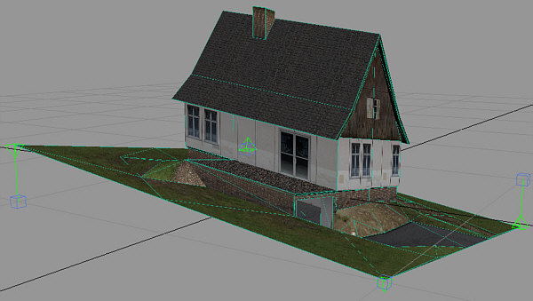
Restrictions
in x/y-axis set, no bend possible, only the corner vertices are
moved (tile is skewed)
To have influence on this Crashday offers the bend restriction parameter. The following list shows some examples of possible values:
NOTE:
The orange line means, no bend in this marked axis!
|
|
|
|
|
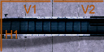 |
|
no restrictions, bend all axis |
V1 restricted, no bend in x-axis |
V1, H1 restricted, no bend at all |
H1 restricted, no bend in y-axis |
V1, V2, H1 restricted, no bend at all |
|
|
|
|
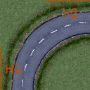 |
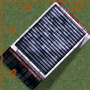 |
|
V1, H1, restricted, no bend in 1. x/y-axis |
||||
|
V1, H1, H2 restricted, no bend at all |
V1, V2, H1, H2 restricted, no bend at all |
|||
|
V2, H2 restricted, no bend in 2. x/y-axis |


NOTE:
V2 and H2 are only available on tiles bigger than 1x1 (20x20m)!
It is possible to set the “V1”, “V2”, “H1” and “H2” values in any sequence. Be sure to end the bend restrictions line with “STOP” to mark there won't follow any more values.
4.6. Addition of vegetation to tile (.CFL)
As you should already know from 4.5. Setup of Crashday tile specification file the vegetation parameters are also part of the .cfl-file. However the vegetation used on each tile is usually set with the vegetatEdit tool which comes with this SDK. So please see VegetEdit VegetatEdit for a documentation on how to add vegetation to your track pieces.
Below is an explanation of the vegetation section just for the completeness of this paragraph:
|
Example file: streetb1.cfl (straight country road) |
Explanation |
|
------------------- VEGETATION ------------------- |
START OF VEGETATION SECTION |
|
|
blank line |
|
4 |
number of different vegetation groups used on this track piece |
|
|
blank line |
|
Next: 1 |
beginning of first vegetation group |
|
shrub1.veg # vegetation file |
file of vegetation type which should be used in this group |
|
1.00 # probability |
probability of vegetation group to appear in-game |
|
2 -10 # X/Z center position |
x/z-coordinates of group's center position in meters |
|
4 20 # X/Z placing extensions |
x/z-extends of vegetation group in meters |
|
-0.5 # Y center position |
y-position of group's center (“auto” for automatic y-placing) |
|
|
blank line |
|
Next: 2 |
beginning of second vegetation group |
|
... |
|
|
... |
|
|
... |
|
|
|
end of file |
HINT:
You can always take a look on how your vegetation will appear in-game by using your cfl.-file with ShowCFL. (see ShowCFL for more info)
4.7. Addition of AI driver information (.CAI)
In Crashday the AI information is specified for each track piece in separate files called [tilename].cai. Every .cfl-file needs a related .cai-file, otherwise the AI considers that as a not passable track piece.
Below is the general structure of the .cai-file.
-
Crashday - AI node infos for tiles
first static line
...
list of AI nodes, connections and their qualities
NOTE:
This list has no required sequence
END
last static line
NOTE:
The “freely roam around” parameter in the .cfl-file is an AI info too. Set this value to “1” if AI can freely roam around on a tile without hitting anything.
The AI info is set by editing the .cai-files with a text editor (e.g. notepad). However you can always use ShowCFL with the related .cfl-file to view the AI nodes. (see ShowCFL)
You can set connections for the following (basic) nodes:

Available
AI nodes for 1x1 tiles
Available
AI nodes for 2x2 tiles
|
tile dimensions 1x1 (20x20m) |
|
|
u1 |
up1, top entry of track piece |
|
r1 |
right1, right entry of track piece |
|
b1 |
bottom1, bottom entry of track piece |
|
l1 |
left1, left entry of track piece |
|
m1 |
middle1, center oh the tile |
|
tile dimensions 2x2, 1x2, 2x1 (40x40m, 20x40m, 40x20m) |
|
|
u1 |
up1, top left entry of track piece |
|
u2 |
up2, top right entry of track piece |
|
r1 |
right1, upper right entry of track piece |
|
r2 |
right2, lower right entry of track piece |
|
b1 |
bottom1, bottom right entry of track piece |
|
b2 |
bottom2, bottom left entry of track piece |
|
l1 |
left1, lower left entry of track piece |
|
l2 |
left2, upper left entry of track piece |
|
m1 |
middle1, center of the upper left section |
|
m2 |
middle2, center of the upper right section |
|
m3 |
middle3, center of the lower right section |
|
m4 |
middle4, center of the lower left section |
In addition to these basic nodes there are nodes for driving below the 0-height (e.g. tunnels), above the 0-height (e.g. bridges) and for jumping/flying. They are working exactly like the basic nodes:
-
*_lift (e.g. u1_lift)
above bottom height
*_sub (e.g. u1_sub)
below bottom height
*_jump (e.g. u1_jump)
jumping/flying
Now you have to set connections between these node points. As long as there is no connection between two nodes, AI assumes it cannot drive this way.
Connections between every node to any other node are possible. The most important link of AI nodes is the obvious way. (e.g. the roads on road tiles) But nevertheless it is possible to drive crosswise this modelled road. So you have to let the AI know which link is the preferred one. For this purpose Crashday offers three different quality types of links:
-
pref
preferred link, this link will be favoured to any other link if the way is not much longer (recommended for roads)
ok
OK link, no problems to drive this way but not the link that is intended to be driven on this tile (e.g. crosswise to roads or on plane meadows)
bad
bad link, possible to drive this link but not recommended (e.g. obstacles blocking the way)
There is one last attribute for AI nodes. The AI has to know whether it has to stick very tight to a certain node or not. For this purpose you can define a radius of obstacle-free space around a node. The default radius for every node without having this attribute set is 5m. Below is a list of all possible settings:
-
very close
free radius of 1,5m around the node (e.g. small gates or entries)
close
free radius of 2,5m around the node (e.g. roads enclosed with guard rails)
loose
free radius of 8m around the node (a lot of free space)
blank
free radius of 11m around the node (nothing to hit here, e.g. free field tiles)

AI
infos in “streetb1.cai”
To
stick to our road example again (see right), let's start setting the
free radius attributes. The nodes being on the road are “u1”
and “b1”. As this road is really wide and not enclosed by
any fences or rails, the default free radius of 5m seems appropriate.
The other two “r1” and “l1” aren't enclosed
as well, so the attribute “free” (11m) would be fine. The
jump nodes are explained later.
Setting possible connections is pretty easy too. AI's preferred link has to be of course the road. So we set from “b1” to “u1” as preferred link. As this link can be driven in both directions, the final line will be “b1 <-> u1 pref”. Imagine the link is only possible from “b1” to “u1” but not vice versa. In this case the line would be “b1 -> u1”.
The remaining links are working the same way except that they are only of quality type “ok”.
Be sure to have actually all border nodes connected. (where possible)
_jump- links
“_jump” to “_jump”-links (e.g. “u1_jump <-> b1_jump”) are used whenever it is possible to fly or jump over something in a height of [die höhe kenne ich jetzt leider nicht, aber matthes meinte es gibt eine bestimmte höhe ;)]
“_jump” to any-links (e.g. “u1_jump -> b1”) are used whenever it is possible to land at this bottom-node's position while coming from the air. The opposite way (e.g. “u1 -> b1_jump”) is of course only possible if a ramp for jumping is available.
The free radius attributes for “_jump” nodes are working the same way as for any other node.
HINT:
All the AI nodes including links, qualities and free radius attributes can be viewed with ShowCFL. (see ShowCFL)
4.8. Addition of stunt definitions (.CST)
The stunt definitions for each track-piece-.cfl are placed in the related .cst-file. These attributes are set with StuntEdit provided with this SDK. see StuntEdit StuntEdit for a documentation on how to add Stunt information to your track pieces.
4.9. Track editor integration
All Crashday default track pieces available in the track editor as well as the checkpoints and dynamic objects are listed the in .cat-files located in [crashday]\trkdata\editor. This ensures a rational by-category-listing. Custom track pieces, that are obviously not contained in these listings, are automatically placed into custom categories to be visible in track editor.
Crashday automatically generates an image for each track piece that hasn't already one available. These images are placed into [crashday]\trkdata\tiles\pictures.
They are only created once, so if you want the game to recreate images (e.g. you modified the model) simply delete the relevant track piece image. If you want you can modify any of these images later. (e.g. making tunnels visible)
5. Tools reference
The following paragraph will be a complete documentation on all tools delivered by the SDK.
5.1. MakeP3D (3D model tools)
[crashday]\tools\makep3d

MakeP3D
prompt
MakeP3D
is a command line based utility designed to convert any .3ds-file
into Crashday's .p3d format. Every .3ds-file you want to convert has
to be located either in [crashday]\editor or
[crashday]\trkdata\cars\[carfolder]. At first you have to type in the
.3ds-file you like to be converted (with or without .3ds) and then
the .p3d-file you want to be created. (with or without .p3d) If you
want something to be converted from or into a carfolder, simply type
[carfolder]/[filename].[extension] into the prompt line (e.g.
judge/judgeMesh.3ds).
Below is a list of parameters which are supported by MakeP3D:
-
-in [filename].3ds
automatically uses the given filename
-out [filename].p3d
automatically creates the named file
-owrite
overwrite without prompting if output file exists
-notex
throws away textures and replaces them by white color. If you don't turn this option on you'll need to have the model's texture
-swap
reorients the polygons
-ignoredupl
forces the tool NOT to "melt" duplicated vertices (identical position in space) into one. can be useful to maintain sharply shaded edges, especially if a model is built without smoothing group support.
-sgs
takes care of smoothing groups instead of ignoring them, can be useful to maintain sharply shaded edges, when you use this parameter there is mostly NO need for turning "-ignoredupl" on
-scaling *.*
scaling factor, “1.0” means no scaling
-liftbottombound *.*
shifts up the bottom plane of the bounding box, in meters (low vertices can even "leave" the bounding box on the bottom end)
Required for vertices in track pieces “main” mesh that are below 0-height-lowertopbound *.*
shifts down the top plane of the bounding box
-mirrorx
mirrors model in x-axis
-mirrory
mirrors model in y-axis (in p3d space positive y means "up", negative y means "down")
-mirrorz
mirrors model in z-axis
-flares
enables lens flares for light objects

NOTE:
To export polys with “self illuminated” appearance, set ambient color for these polys to “255 255 255” in your modelling application.
HINT:
for making the export process much more efficient you can create different batch (.bat) or link files for different purposes with different parameters, e.g. have a batch file that is only for car conversion (makep3d -sgs -flares)
5.2. ZModeler P3D Export (3D model tools)

ZModeler
.p3d filter
When
you are using ZModeler, there is (nearly) no need for MakeP3D. The
SDK provides you with an own .p3d filter for Zmodeler1.x. So you are
able to easily export and even import content from or to ZModeler.
Installing
Just copy the file “p3d.zmf” into your ZModeler filters directory. (e.g. C:\programs\zmodeler\filters)
When you are using the filter for the first time, it will ask for the Crashday installation directory. After setting it correctly (e.g. C:\games\crashday) conversion should work fine.
NOTE:
As ZModeler is not capable of handling light objects, no lights will be imported nor exported. In fact, if you like to create cars for Crashday, they will either have no light flares or you have to export your model into another modelling application to add some lights.
Furthermore ZModeler does not support .dds textures. If you like to use Crashday's default textures, you have to convert them into .tga-files (or else) first to see them in viewport.
5.3. ShowP3D (3D model tools)

Interface
of ShowP3D
[crashday]\tools\showp3d
ShowP3D is a utility designed to view any Crashday .p3d-file with the in-game engine. To do so just open a .p3d-file with showp3d.exe
-double click a .p3d->select the desired application->another->select showp3d.exe from [crashday]\tools\showp3d-
ShowP3D lets you hide or unhide any 3d mesh contained in the .p3d by simply hitting the related key next to the mesh's name.
It also provides some other keyboard commands which are listed in the lower right corner of the screen.
Note:
When lunching “showp3d.exe” with parameter “-windowed, it will start in windowed mode.
5.4. ShowCFL (Track piece tools)

Interface
of ShowCFL with unhided AI nodes
[crashday]\tools\showcfl
ShowCFL is a utility similar to ShowP3D but to view Crashday's track piece .cfl-files with the in-game engine.
It is designed to view the final look of vegetation on the one hand side and on the other it displays the AI node information. So whenever you changed a .cai-file you can check your changes by viewing the related track piece with ShowCFL.
It also provides complete “level of detail” support. (active “LOD” step is displayed in lower left corner) This way you can easily check if your “level of detail” resolution is appropriate to the actual distance. Like in ShowP3D all available keyboard commands are displayed in the lower right corner of the screen.
NOTE:
When lunching “showcfl.exe” with parameter “-windowed, it will start in windowed mode.
5.5. StuntEdit (Track piece tools)

Template
bild, da das menu noch falsch ist
[crashday]\tools\stuntedit
StuntEdit is a tool designed to create the stunt bonus definitions for each track piece stored in the related .cst-files.
In Crashday you can either achieve stunt bonuses by general moves (e.g. simple jumps, flips, spins, etc.) or by passing certain predefined stunt boxes. These boxes are set with StuntEdit for each track piece.
Every track piece can have as much predefined stunts as you like. Every of these stunt definitions consists of two stunt boxes and a maximum time the player has to reach the second stunt box after triggering the first one. With this easy system it is possible to create nearly every stunt definition. You can see an example in the image to the right. When the player triggers the first stunt box (i.e. he hits the jump), he needs to reach the second jump in a certain time. Thus this stunt bonus defined by these two boxes is only given when hitting the ramp with a certain speed.
How does StuntEdit work?
When starting StuntEdit, minijump.cfl is loaded by default. As you see, not the .cst-files are loaded but the .cfl-files. To load your own track piece you can either type its .cfl's name into the load dialog or, as you do with ShowCFL, open your .cfl-directly with StuntEdit.
Hitting the button “Add Stunt” creates a new Stunt definition with default values. You can drag the two stunt boxes with your mouse. Their dimensions are typed into the related text fields to the right.
The first three text fields are “Max time” - time in seconds to reach the second stunt box, “Score” - bonus score granted when completing the stunt and “Message” - the bonus message displayed on screen when stunt is completed.
In the lower right you see the “Stunts list”. If you have more than one stunt defined on your track piece, you can scroll through these stunts with this list. (pressing the “arrow keys”)
Stunt ID's
StuntEdit offers to assign every stunt definition a unique ID. (if left “(none)” a default ID is assigned) By these unique IDs every single stunt definition is identified throughout the whole game. This offers some extended possibilities:
You can set a certain “Previous Stunt” for a stunt definition. Only if this previous stunt was completed prior to the current stunt, the bonus is granted. Do this by typing the stunt ID you want to be completed before into the “Prev. Stunt” input field.
If you do not want the current stunt to be counted when a certain stunt was completed, just type “![previous stunt]” into the “Prev. Stunt” input field (e.g. “!hugeJump”)
NOTE:
You can quit StuntEdit by pressing “Alt+F4”. Don't forget to save your stunt definitions before quitting.
5.6. VegetEdit (Track piece tools)

Template
bild, da das menu noch Assi aussieht
[crashday]\tools\vegetedit
VegetEdit is a tool designed to set the amount and styles of vegetation on each track piece. For this purpose Crashday offers a range of predefined vegetation styles saved in .veg-files. (these files are located in [crashday]\trkdata\vegetat) These .veg-files are for example different tree styles or bushes.
How does VegetEdit work
When starting VegetEdit, field.cfl is loaded by default. To load your own track piece you can either type its .cfl's name into the load dialog or, as you do with ShowCFL, open your .cfl-directly with VegetEdit. To the right is a list with all vegetation styles available in [crashday]\trkdata\vegetat. Hitting the “Add” button to the lower right, creates a new vegetation group. Change the style by selecting a .veg-file from the list. The parameters of each style (e.g. density, probability, etc.) are displayed next to the list. A red box is created that indicates the area where it is possible that vegetation objects are appearing. You can either shift/scale this box by pressing ”Ctrl”/“shift” + left mouse button and dragging or by typing the exact values into the corresponding input fields to the right.
As y-position you can select “Auto Height”. That means every vegetation object is set “on top” of the track piece however the shape is formed. If “Auto Height” isn't suiting your needs, you can type manually the “Height Position” for the whole vegetation group.
Another very useful feature is the “Reference Link” in the upper right corner of the screen. You can set an existing track piece as reference for your current track piece. The whole vegetation settings from the reference tile are applied to the current one. So you do not have to set all over again.
NOTE:
You can quit VegetEdit by pressing “Esc”. Don't forget to save your vegetation settings before quitting.
HINT:
Remember, whenever you like to view the final result, just open your .cfl-file in ShowCFL.
5.7. Car Manager (Car management tools)

Crashday
carmanager interface
[crashday]\tools\carmanager
The Crashday Car Manager is a small utility to get an overview of all currently installed cars, add new cars from Crashday car packets (.cpk), export existing cars to Crashday car packets and remove existing cars.
When starting for the first time, it will ask for the Crashday installation directory. After setting it correctly (e.g. C:\games\crashday) the car manager should work fine.
The manager supports different release versions and a preview image. To use the version feature just create a “version.txt” in the carfolder. The first line in this text file has to be the version number (e.g. “0.9”) while the second line contains a comment to your vehicle. For adding a preview image simply create a “preview.bmp” showing a representative image of your ride. You'll achieve the best image quality with a resolution of 175x141 pixels.
NOTE:
The program will ask for additional content that maybe needs to be delivered with your .cpk-file (e.g. custom rim model and texture) when you hit the “Export to Car Packet” button. Just select the relevant files and they'll be automatically added to the .cpk-file.
HINT:
The .cpk-file created by the carmanager is uncompressed. To achieve optimal file size we recommend to compress it using a common tool. (e.g. winrar)
6.
Technical reference
6.1.
Textures and shaders
6.2. Overview of existing material shaders
-
glass.dds
reflective glass material used for all glass parts on cars (has damage map)

carplast.dds
grey plastic used for bright plastic
parts on cars

carplas2.dds
dark plastic used for dark plastic
parts on cars

carplas3.dds
dark reflective plastic used for reflecting plastic parts on cars

lighchrm.dds
headlight chrome used for reflecting chrome-like surfaces in headlights

rubber.dds
rubber used for parts that seperate windows and car body

6.3 Level Of Detail implementation
6.4. Official Crashday car certificate guidelines
6.5. P3D file format specification
7. Example reference
2006
by Moon Byte Studios Page